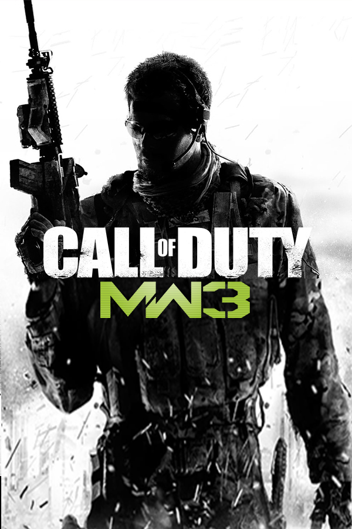

Call of Duty: Modern Warfare 3
Call of Duty: Modern Warfare 3
Details
|  | |
| Playtime | Not Played |
| Last Activity | 4/23/2015 18:55:00 |
| Added | 4/24/2025 1:30:35 |
| Modified | 4/30/2025 2:42:27 |
| Completion Status | Not Played |
| Library | Xbox |
| Source | Xbox |
| Platform | Microsoft Xbox 360 |
| Release Date | 11/8/2011 |
| Community Score | 90 |
| Critic Score | 89 |
| User Score | |
| Genre | Action FPS Shooter |
| Developer | Aspyr Media Infinity Ward Raven Software Sledgehammer Games |
| Publisher | Activision Aspyr Media Noviy Disk |
| Feature | Multiplayer Single Player |
| Links | PCGamingWiki HowLongToBeat IGDB SteamDB StrategyWiki MobyGames Wikipedia WSGF |
| Tag | Contemporary Direct control Europe First-Person IW 5.0 Realistic Real-Time |
Description
Call of Duty: Modern Warfare 3 is a 2011 first-person shooter game developed by Infinity Ward and Sledgehammer Games and published by Activision. The game was released worldwide in November 8 2011 for Microsoft Windows, the Xbox 360, PlayStation 3, Wii, and OS X. It is the sequel to Call of Duty: Modern Warfare 2 (2009), serving as the third and final installment in the original Modern Warfare trilogy and the eighth Call of Duty installment overall. A separate version for the Nintendo DS was developed by n-Space, while Treyarch developed the game's Wii port. In Japan, Square Enix published the game with a separate subtitled and dubbed version.
The game's campaign follows Modern Warfare 2 and begins right after the events of its final mission. Similar to Modern Warfare 2, it is centered on Task Force 141, which contains Captain Price, Soap MacTavish, and a newly introduced playable character, Yuri. Alongside the Delta Force and Special Air Service, they hunt Vladimir Makarov (the main antagonist of the trilogy), a Russian terrorist who leads the Russian Ultranationalist party. He led several terror attacks across Europe, triggering a large-scale war between the Ultranationalists and friendly forces. For the game's multiplayer mode, new mode types and killstreak choices were brought in. Improvements were also made to the mode that solved issues that appeared in Modern Warfare 2.
Using an enhanced version of Modern Warfare 2's IW engine, development for the game began in 2010 with more than one developer studio. Prior to development, Infinity Ward co-founders Jason West and Vince Zampella left the company to form Respawn Entertainment. Other members had been fired or had left the company following the duo's departure. Sledgehammer Games had joined the Modern Warfare 3 development force, with Raven Software also developing the game's multiplayer mode. Following a large leak containing detailed information about the game, multiple teaser trailers were released, with each showcasing a location featured in the game's campaign, leading up to a full reveal.
Modern Warfare 3 received positive reviews from critics, with praise for its gameplay, campaign, and multiplayer, although there was some criticism for its story and lack of innovation. It won the award for Best Shooter at the 2011 Spike Video Game Awards, as well as Action Game of the Year at the 15th Annual Interactive Achievement Awards. It was a massive commercial success. Within 24 hours of going on sale, the game sold 6.5 million copies in the United States and the United Kingdom and grossed $400 million, contemporaneously making it the largest entertainment launch ever.
Gameplay
Modern Warfare 3 is a first-person shooter video game much like its predecessors. Modern Warfare 3 for Microsoft Windows has dedicated server support.
Campaign
The player assumes the role of various characters during the single-player campaign, changing perspectives throughout the progression of the story, which, like its predecessors, is divided into three sets of missions called "Acts". Each mission in an act features a series of objectives that are displayed on the heads up display, which marks the direction and distance between such objectives and the player. Damage to the player is shown by the visualization of blood-spatter or red-outs on the screen. The player's health regenerates over time as long as the player character avoids taking damage for a limited time. Mission objectives vary in their requirements, ranging from having the player arrive at a particular checkpoint, to eliminating enemies in a specified location, to standing their ground against enemy squadrons, directing remote-operated weapons, and planting explosive charges on enemy installations. The player is also accompanied by fellow soldiers who cannot be issued orders. Like its predecessor, the game includes an interactive scene of a terror attack against civilians, which the player is given the option of skipping due to the portrayal of graphic and potentially upsetting content, including harm to children.
Modern Warfare 3 features a new mode, called Survival. This mode allows between one and two players to fight massive waves of enemies, with each wave becoming increasingly difficult. It differs from the Nazi Zombies mode in Call of Duty: World at War, principally in that enemies no longer spawn at fixed locations as the zombies do, but instead appear at tactical positions based on the current location of the player. The mode is available on all multiplayer maps in the game. Players earn in-game cash for items such as weapons, upgrades, ammo, air/ground support, and equipment if they kill or assist in killing enemies, while more items can be unlocked by earning XP which is also increased by killing enemies. Special Ops also returns from Modern Warfare 2. These challenge missions feature up to 48 stars, unlike its previous installment, which featured 69. Some weapons in Spec Ops are exclusive to that game mode and are not available for play in multiplayer mode.
The entire Killstreak reward system has been altered to make it more difficult for players to get early unlocks. Killstreaks are now known as Pointstreaks, and kills are no longer the only way to increase the player's point streak. Completing objectives such as planting a bomb or capturing a flag in Capture The Flag awards points towards the player's Pointstreak. Pointstreak rewards are organized into three different "strike packages" called Assault, Support, and Specialist.
The Assault strike package works the same as the Killstreak reward system in Modern Warfare 2 and Black Ops: the player must earn more and more points without dying. Once the player is killed, their points are reset to zero. Likewise, the Specialist strike package rewards players with perks after every second consecutive kill. Upon death, however, the player loses all the perks and the points are reset to zero. In contrast, the Support strike package is awarded based on the total points that the player has earned over the entire match, regardless of how often the player dies. If a player switches to a custom class with a different reward system (either assault or specialist) during gameplay, all points are automatically reset to 0. Players are allowed to choose which Pointstreak rewards they want to use when they gain it during the match, rather than choosing them between rounds.
Along with revamping the entire Killstreak reward system, Modern Warfare 3 also has a completely modified Ranking and Unlocks system, which does not use a currency system for unlocks. The player's primary weapon levels up alongside the player, and unlocks a number of "Proficiency" perks such as Attachments, (allows two attachments and is a successor to the "Bling" and "Warlord" perks), Kick (reduced recoil while aiming down the player's sight) and Focus (reduced flinching while under fire). Only one Proficiency can be put on a primary weapon. Another new addition is the ability to equip "Hybrid Scopes" on a weapon, such as a holographic sight with a red dot magnifier, allowing players to switch between magnified and non-magnified. Modern Warfare 3 introduces a new "Prestige Shop" which will unlock only after the player has selected the option to prestige for the first time. The "Prestige Shop" allows Prestige players to use tokens they gain from using the Prestige option to buy exclusive features such as double XP and an extra custom weapon class. The player is able to Prestige 20 times.
Several controversial perks in Modern Warfare 2, accused of being too overpowered, have been removed in Modern Warfare 3. Diving from standing to prone, known as "dolphin diving", has been removed due to balancing issues. Modern Warfare 3 utilized Treyarch's hot fix system to fix bugs and glitches. Modern Warfare 3 features a local and online split-screen option. (Not available for the Wii version.)
New game modes were added:
- Kill Confirmed: players must collect floating dog tags from the corpse of a downed enemy before the kill can be registered. However, the opposing team can pick up the dog tag as well to deny the other team a kill, which denies the other team a point.
- Team Defender: both teams attempt to capture a flag dropped by the first person who is killed when the match starts, the team of the person who holds the flag will get double points for their kills; while the team without the flag only gets the default number per kill.
- Private matches also now include pre-made game modes including: "Infected" (where the infected kill enemies to recruit them to their team), "Drop Zone" (where the player must hold a drop zone for points and care packages), "Team Juggernaut" (each team plays alongside an AI Juggernaut character), "Gun Game" (be the first to get one kill with every gun in the game), "One in the Chamber" (in which players are only allowed one pistol with one bullet and three lives where they can only get more bullets by killing other players), and "Juggernaut" (free for all against a juggernaut, kill the juggernaut to become it). Along with this, players are allowed to create their own game modes with customized settings such as number of players and time limit.
The Special Ops game mode from Modern Warfare 2 is present in Modern Warfare 3, and includes new features which make it more replayable and similar to other game modes, such as Nazi Zombies from previous Call of Duty games, and Hordes from Gears of War. The two main Special Ops modes include one that is generally the same as the last Modern Warfare game, and a new wave-based game, Survival, where the player is inserted into a multiplayer map alone or with a single partner and defends an area against waves of enemies. The players can buy support options unlocked with money earned during each round via the means of killing the enemy and completing the optional objectives on each wave, which vary from getting multi-kills to not taking damage. You gain experience for killing them which allows for more weapons to be unlocked, as well as other support options. The model also works with the DLC multiplayer maps.
Call of Duty: Elite was an online service developed by Beachhead Studios for the multiplayer portion of Modern Warfare 3 (as well as the previous installment in the series, Black Ops). It was first showcased at E3 2011 and was released on November 8, 2011, to coincide with the release of Modern Warfare 3. The free version included features such as lifetime statistics and social networking integration. It included monthly downloadable content. The service was shut down by Activision on February 28, 2014, and did not support Call of Duty: Ghosts.
The downloadable content (DLC) available for Modern Warfare 3 is an assortment of additional multiplayer maps, Special Ops missions, and Face-Off Maps that came as part of the Call of Duty ELITE Premium membership. Downloadable content was split into four unique "Content Collections," each with 2-3 content packs.
During the release of Modern Warfare 3 and Call of Duty's Elite service, premium members of the service were promised 20 pieces of DLC over a 9-month period, with content releases for each platform every month. This number was increased to 22 on Call of Duty's official Elite Content Calendar. Initially, all downloadable content was only available to Call of Duty: Elite premium members. Xbox 360 users received all DLC about a month before PlayStation 3 users regardless of Elite membership due to a special contract between Microsoft and Activision. As an example, the first Collection dropped on Xbox 360 on January 24, and on February 28 on the PS3. Content Drops were released monthly exclusively to all Call of Duty: Elite premium and founder members. There were a total of 9 monthly DLC releases up until the end of Modern Warfare 3' 2012 content season. September was the last month DLC was released for Xbox 360, and October was the last month for PlayStation 3. Since Call of Duty: Elite was not available for PC gamers, DLC was only released in the form of Content Collections.
On May 9, 2012, it was announced that the Face-Off mode would be introduced to Modern Warfare 3. It included smaller maps, which promoted fast gameplay matches. Face-Off included options for 1v1, 2v2, and 3v3 battles. Two free Face-Off maps became available for all Xbox Live Gold subscribers on May 15, 2012, regardless of Call of Duty: Elite membership.
Story
Characters
The game sees the return of Task Force 141 members Captain John "Soap" MacTavish (Kevin McKidd), Captain John Price (Billy Murray) and Russian loyalist "Nikolai", who are on the run after killing the rogue General Shepherd, the main antagonist of the previous game. Task Force 141 was officially disavowed due to Shepherd's death, with the truth of his involvement in igniting World War III known only to Price, Soap, and Nikolai. For most of the game, the player controls Yuri, an ex-Spetsnaz operator and former associate of Russian Ultranationalist terrorist Makarov, who joins Task Force 141 on their hunt for Makarov, who returns as the game's main antagonist. Several playable characters have been added, including Delta Force operator Staff Sergeant Derek "Frost" Westbrook; Special Air Service Sergeant Marcus Burns; and Andrei Harkov, a Russian FGS agent tasked with protecting the Russian President. Just like President Al-Fulani in the first game, Soap is only "playable" during the game's opening sequence; while Price becomes the player character in the game's final mission, and is the only character in the trilogy who speaks while playable. The player also takes brief control of a civilian tourist in London, seconds before he and his family are killed by a chemical agent; as well as an AC-130 TV Operator during the Battle of Paris.
New non-player characters (NPCs) include Delta Force operatives "Sandman" (William Fichtner), "Truck" (Idris Elba), and "Grinch" (Timothy Olyphant), who serve as Frost's squadmates. Captain MacMillan briefly returns from Call of Duty 4: Modern Warfare as Baseplate. Craig Fairbrass, who originally voiced the characters Gaz and Ghost, returns to voice SAS operative Sergeant Wallcroft, who originally had a minor role in the first Modern Warfare.
Locations featured in the game include India, the United States, Sierra Leone, the United Kingdom, Germany, Somalia, France, the Czech Republic, Russia, and the United Arab Emirates.
In August 2016, Soap (Brandon Hughes) and Price (Kobi Hughes) are extracted by Nikolai to a safe house in Himachal Pradesh, but are soon attacked by Makarov's forces. At Price's request, Nikolai contacts his "best man," a former Spetsnaz operator named Yuri, with a common grudge against Makarov.
Concurrently, a Delta Force squad codenamed "Metal" assists the defending American forces in New York City from the Russian military. After taking down a radio jammer atop the New York Stock Exchange Building, Team Metal aids Navy SEALs in hijacking an Oscar II-class submarine and using its missile payload to destroy the Russian Navy in New York Bay. With air superiority reestablished and the enemy fleet destroyed, the United States goes on the offensive. As a result, Russia withdraws all its forces from the East Coast.
Three months later, Russian President Boris Vorshevsky flies to Hamburg to take part in peace talks with the United States protected by Harkov. However, his security detail is ambushed by Makarov’s forces aboard the plane, forcing it to crash land. They assault the crash site, kill Harkov and the remaining FGS agents guarding Vorshevsky, and kidnap him. Makarov demands he relinquish Russia's nuclear launch codes, threatening his daughter's life if he does not comply. Additionally, Makarov smuggles chemical bombs from Sierra Leone to several NATO member capital cities and military bases, with Task Force 141 failing to prevent the deadly cargo from leaving the country. The SAS identify one of the bombs as it is shipped into London but are unable to intervene in time as it detonates, along with the rest across the continent. With NATO crippled by the attacks, Russia, now under Makarov's control, invades Europe.
Team Metal rescues the Vice President of the United States in Hamburg while NATO scrambles to repel the Russians. Task Force 141 acquires a lead from MacMillan that a Somali black market warlord named Waraabe is associated with the chemical weapons. The team assaults his compound in Bosaso, cornering and interrogating the warlord into revealing that a man, Viktor "Volk" Khristenko, CEO of Ultranationalist front company Fregata Industries, was responsible for constructing the bombs and is located in Paris. Price then executes Waraabe and relays the intelligence to Team Metal, who are deployed to capture Volk with assistance from the GIGN. Volk is captured, and under interrogation, he reveals that Makarov is meeting with his associates in Prague. Price, Soap, and Yuri infiltrate the city, but the meeting turns out to be a trap, during which Sergeant Kamarov, a Russian loyalist and close contact with Price, is killed by Makarov, who addresses Yuri as "his friend." In the ensuing fight, Soap suffers an injury that causes the knife wound he sustained while fighting with Shepherd to reopen; he dies of blood loss just after revealing Makarov's association with Yuri to Price.
An enraged Price interrogates Yuri at gunpoint, demanding to know his past with Makarov. Yuri explains that he was present in Pripyat during Zakhaev's attempted assassination in 1996 and became disillusioned with the Ultranationalist cause following the nuclear detonation in the Middle East in 2011, with Makarov revealed to have personally detonated the bomb. Yuri attempted to thwart the massacre at Zakhaev International Airport but was critically wounded by Makarov upon learning of his betrayal before being rescued by security forces. After learning this, Price begrudgingly continues to work with Yuri. Receiving further help from MacMillan, the two infiltrate Makarov's castle base in rural Czech Republic to acquire intel on his whereabouts, learning that he has located President Vorshevsky's daughter, Alena, in Berlin and intends to kidnap her. Price relays the intelligence to Team Metal, who despite assistance from the Bundeswehr, fail to reach her before Makarov's men capture her. They track her and the President to a diamond mine in Siberia, launching a rescue operation with Task Force 141. Team Metal sacrifices themselves to hold off Makarov's forces long enough for Vorshevsky, Alena, and 141 to escape as the mine collapses on top of them. With the President safe and Makarov's machinations publicly revealed, relations between Russia and the U.S. come to peace, the war in Europe ends, and Makarov goes into hiding.
By January 2017, Price, Nikolai, and Yuri have tracked Makarov to a hotel in Dubai. Price and Yuri don modified EOD suits to assault the building, cornering Makarov on the rooftop. He gains the upper hand in the ensuing struggle and prepares to execute Price but is distracted by Yuri, whom he kills. Price then tackles Makarov and wraps a steel cable around his neck before plunging him through a skylight, hanging him. A victorious Price then lights a cigar as first responders approach the hotel.
Development
A 2010 Q3 earnings call from Activision confirmed that the eighth installment of the franchise was currently in development by Sledgehammer Games and Raven Software and due for release "during the back half of 2011". This was revealed to be Infinity Ward's Call of Duty: Modern Warfare 3, with the latter developers co-developing multiplayer. Call of Duty: Modern Warfare 3 was known to be in development after a legal dispute between Infinity Ward co-founders Jason West and Vince Zampella and Activision resulted in the pair being fired from the company. Several dozen Infinity Ward employees followed West and Zampella as a result of the ongoing dispute, causing Activision to enlist the services of Sledgehammer Games and Raven Software to assist in the development of the title. The game was said to have been in development since only two weeks after the release of their previous game, Call of Duty: Modern Warfare 2. Also reported was that Sledgehammer was aiming for a "bug free" first outing in the Call of Duty franchise, and also set a goal for Metacritic review scores above 95 percent. Modern Warfare 3 utilizes the MW3 Engine, unofficially the IW 5.0 Engine. Improvements include better streaming and audio. Sledgehammer Games announced the game to be the first entry in the Modern Warfare series to have built-in support for color-blind gamers.
The Official UK PlayStation Magazine lent credence to speculation that Modern Warfare 3 would be a prequel starring fan-favorite character Ghost. The magazine's sources strengthened a rumor which first reared its head online early in January 2011. On the Rumor Machine page in its issue (055), OPM points to "insider whispers" which suggest: "Infinity Ward's next Modern Warfare title will be a prequel, with Ghost in the lead role." According to PSM3, the first snippet of Modern Warfare 3 gameplay would be revealed in mid-April. According to the publication's May 2011 issue, insider rumors say "the next in Activision's megaton FPS series will be announced in mid-April".
On May 13, 2011, the video game website Kotaku revealed the existence of Modern Warfare 3 following a massive leak. According to Kotaku, this leak came from multiple sources who may or may not work at Activision and Infinity Ward. The leak contained thorough information about the game, confirming that it would be a direct sequel to Call of Duty: Modern Warfare 2, as well as details regarding weapons, levels, and modes found in the game. In response to the leaks, Robert Bowling tweeted "A lot of hype & a lot of leaked info on MW3, some still accurate, some not. To avoid spoiling the experience, I'd wait for the real reveal." Just hours after the leaked assets appeared on Kotaku, four teaser trailers were released on the official Call of Duty YouTube page, separately titled "America", "England", "France" and "Germany", indicating the various locales of the game.
Marketing
On May 23, 2011, Activision released the first gameplay trailer for Call of Duty: Modern Warfare 3 on YouTube ahead of its official premiere during the NBA Western Conference Finals. On May 31, 2011, Activision announced Call of Duty: Elite, a new social service for the Call of Duty community to track and compare statistics, create videos and access premium content. The service is fully integrated into Call of Duty: Modern Warfare 3, and launched on November 8, 2011, to coincide with the game's release. On June 6, 2011, at 11:00 AM (PDT), the first live gameplay demo of Modern Warfare 3 was presented by Robert Bowling and Glen Schofield at E3 2011. On June 14, 2011, 12:35 PM (EST), the first live gameplay demo of the new Survival Mode was played by Jimmy Fallon and Simon Pegg on Late Night with Jimmy Fallon. On August 9, 2011, the trailer for the new Survival Mode was released on YouTube. On September 2, 2011, the multiplayer world premiere trailer was released on YouTube. On September 3, 2011, another multiplayer trailer was released on YouTube showing off the heads-up display along with various weapons, perks, and killstreaks. On October 6, 2011, a second full-length cinematic trailer was released. On October 22, 2011, the launch trailer was released.
On July 19, 2011, UK distributor Lygo unveiled a range of Turtle Beach Ear Force Modern Warfare 3 gaming headsets that launched in November 2011. The headsets are distinguished by custom audio presets designed by the audio teams at developers Infinity Ward and Sledgehammer Games "in order to provide the ultimate immersion into the cinematic world of Modern Warfare 3". On August 24, 2011, Activision revealed the official Modern Warfare 3 sunglasses. These Call of Duty-branded glasses come from technology eyewear manufacturer GUNNAR – in a licensed partnership with Activision – and join its "Advanced Gaming Eyewear" line. They come with a limited edition Modern Warfare 3 carrying case and cleaning cloth. The product is sold exclusively in North America at Best Buy retail locations and at select European retailers. Microsoft released two limited-edition Modern Warfare 3-themed accessories on October 11, 2011, a wireless controller and a wireless headset. On September 29, 2011, Munitio announced a partnership with Activision in order to make a special edition Modern Warfare 3 9 mm "billet" earphone featuring the Modern Warfare 3 logo, among other things. The earphones were available for pre-order and were released on October 23, 2011. On October 18, 2011, Logitech announced a partnership with Activision in order to make a special edition Modern Warfare 3 mouse and keyboard which feature many things, including the Modern Warfare 3 logo.
On September 2, 2011, Jeep announced a partnership with Activision for the second year in a row, to make a special edition Modern Warfare 3 Jeep based on the Wrangler Rubicon model. The Jeep comes with various features including the interior and exterior being designed with a Modern Warfare 3 theme. Jeep dealers started selling this model in November 2011.
On August 24, 2011, the PepsiCo-owned brand Mountain Dew officially announced on their Facebook page that they would be promoting the game with their "Game Fuel" soda variants, which would be cherry-citrus-flavored (the original Game Fuel that promoted Halo 3 in 2007 and brought back in 2009 to promote World of Warcraft) and Tropical-flavored (a new flavor that was tested by 500 Dew Labs members). The drinks featured codes to give the player double experience points in-game, depending on the size of the drink. Another PepsiCo-owned brand, Doritos, promoted the game with its "Cool Ranch" and "Nacho Cheese" flavors and also followed the same rules as the Mountain Dew promotion. Both promotions started on October 10, 2011, and ended on December 31, 2011. In Australia, 500 ml cans of V Energy Drink have been branded with the Modern Warfare 3 logo, along with a branded code which can be used for downloads and previews.
To promote the game, Activision held a two-day event called Call of Duty: Experience 2011 (Call of Duty: XP for short) which took place in Los Angeles from September 2–3, 2011. It featured many things including the reveal of the new multiplayer which attendees were able to play for the first time. In addition, all attendees received the Hardened Edition for free as a gift for attending. At a Call of Duty: Modern Warfare 3 VIP party in Amsterdam, Dutch porn star and avid fan of the series Kim Holland was originally invited to attend the event until she was suddenly uninvited when Activision discovered her profession. In her blog, she shared her opinion and feelings towards Activision's sudden decision, writing: "People murdering people is neat, [...] but love-makers are dirty?" Activision did not respond to any comments about the subject.
Activision had planned to set up an official website to promote the game, however, the domain name "ModernWarfare3.com" had already been taken and was used for an anti-Call of Duty website and redirecting users to Electronic Arts's game Battlefield 3. Activision filed a US$2,600 complaint against the site with the National Arbitration Forum. On September 8, 2011, Activision won the complaint and acquired the rights to the domain name. In November 2011, actors Jonah Hill and Sam Worthington (who voiced the main character Alex Mason in Black Ops, the previous game to Modern Warfare 3), and NBA athlete Dwight Howard starred in commercials advertising the game.
Release
Two weeks before the release of the game, it was reported that half of the PC version had been uploaded online after being stolen from a warehouse in Fresno, California. Investigators working on behalf of Activision searched torrent websites for traces of the game as well as visiting people who had downloaded a copy across the United States and requested that they remove it or they would face a fine of US$5,000.
As early as late October, reports were already surfacing about copies being sold early to people with gameplay videos uploaded online. On November 3, 2011, it was reported that copies of the game were already being sold early in the United States. K-Mart had already started selling copies of the game before its scheduled release date with copies already appearing on eBay and Craigslist. This was due to an error made by one of the shipping companies that told Walmart to sell copies of the game immediately after receiving the shipments. However, Activision contacted K-mart about this and had the issue resolved.
French site TF1 News reported that a truck suffered a collision with a car on November 6, 2011, in Créteil, south Paris, before two masked individuals emerged from the car. The criminals reportedly used tear gas to neutralize the truck drivers before hopping in and making off with the video game shipment said to be worth 400,000 Euros. A separate report said the truck contained a delivery of 6000 copies of Modern Warfare 3.
Shortly after the game's release, a man from Aurora, Colorado who did not receive a copy of the game at his local Best Buy, despite pre-ordering it, claimed to be so angry that he "could blow this place up". He was also reported as having threatened to shoot employees once they left the store. Lomon Sar, age 31, was issued a citation and court summons by police responding to the disturbance. The game was released for OS X on May 20, 2014.
Retail versions
Modern Warfare 3 was released in two different retail versions across the PlayStation 3 and Xbox 360 platforms: Standard and Hardened. The standard version consists of the game and an instructional manual and is the only version available for the Microsoft Windows platform. Contents within the Hardened Edition include the game disc with "unique art", one-year membership to Call of Duty: Elite, "special founder status" on Call of Duty: Elite which includes an exclusive in-game emblem, player card, weapon camouflage, clan XP boost, and more exclusive benefits, premium collectible Steelbook case, exclusive animated timeline theme for PS3 only, exclusive Spec Ops Juggernaut Xbox Live avatar outfit for Xbox 360 only, and a limited edition, collectible field journal, which chronicles "the entire saga with 100+ pages of authentic military sketches, diagrams, and written entries."
Robert Bowling of Infinity Ward confirmed that there will be no Prestige Edition of Modern Warfare 3. In the past, the Prestige editions of previous Call of Duty games have included physical items such as a remote-controlled car for Black Ops, a pair of night vision goggles and a life-sized plastic head to put them on for Modern Warfare 2.
On August 19, 2011, UK retailer Game announced an Intel Pack of Modern Warfare 3. It comes with a British special forces avatar for both the Xbox 360 and PlayStation 3 versions, as well as a Brady strategy guide. On September 3, 2011, Activision and Microsoft jointly announced a special, limited Modern Warfare 3 version of the Xbox 360 with a 320 GB hard disk. The unit is designed by the Call of Duty team and includes two custom wireless controllers, a copy of Modern Warfare 3, and features custom sounds when the console is turned on/off or when the disc tray is ejected. A one-month subscription to Xbox Live Gold is also included, as well as exclusive avatar items.
Reception
Critical response
Call of Duty: Modern Warfare 3 received "generally positive" reviews, according to review aggregator Metacritic, except for the Wii, where it received "mixed or average" reviews.
The Daily Telegraph gave the game's Xbox 360 version 5 stars out of 5, stating that even as "the series has always been renowned for elements like the excellent sound design, the gloss, polish, and compulsion of its gameplay," it is "a game that not only lives up to the brand hype but exceeds it. A game where the mass appeal is justified and the expectations are met." Gaming Evolution gave the PS3 and Xbox 360 versions a 9.0 out of 10, stating "Modern Warfare 3 lives up to the hype. It is proving itself the one of the best FPS the genre has to offer." IGN gave the game's Xbox 360 version a 9.0 out of 10.0, pointing out that the game offers "great multiplayer, [a] fun campaign, tons of content, but [also] a forgettable story."
GameSpot qualifies its review, stating that "the series' signature thrills have lost some of their luster. Modern Warfare 3 iterates rather than innovates, so the fun you have is familiar", but concludes by affirming that "fortunately, [the game is] also utterly engrossing and immensely satisfying, giving fans another reason to rejoice in this busy shooter season". Eurogamer gave the game an 8/10 noting that it is a "ferocious and satisfying game that knows exactly what players expect, and delivers on that promise with bullish confidence" but with "an outmoded single-player campaign".
Reviews for the Wii version of the game have been less favorable, with IGN rating it a 4.5 out of 10, noting the lacking graphics and poor friend code system.
Following early critical reaction of the 2023 game Call of Duty: Modern Warfare III (essentially the third in a separate reboot series) before its official release, this game was subjected to review bombing bringing the Metacritic user score as low as 3.5. IGN attributed this as players' confusion between the two titles and confirmed Metacritic was in the process of removing these reviews.
Activision has said that it believes Call of Duty: Modern Warfare 3 day-one shipments were the largest for any game ever. "The record number of pre-orders from Modern Warfare 3 drove the largest day-one shipments in our history, and in the industry's history," said Activision Publishing CEO Eric Hirshberg during an earnings call on November 8, 2011. Hirshberg said more than 1.5 million people queued at 13,000 shops at midnight on Monday to buy Modern Warfare 3, "making it the largest retail release in Activision's history and in the industry's history".
Activision reported sales figures for Modern Warfare 3 in the U.S. and UK being more than 6.5 million copies sold on launch day and grossed $400 million in the US and UK alone in its first 24 hours, making it the biggest entertainment launch of all time. It is the third year in a row that the Call of Duty series has broken the same record. 2010's Black Ops grossed $360 million on day one; in 2009, Modern Warfare 2 brought in $310 million. Activision Blizzard president and CEO Bobby Kotick stated that "the launch of Call of Duty: Modern Warfare 3 is the biggest entertainment launch of all time in any medium, and we [Activision] achieved this record with sales from only two territories."
The title grossed more than $775 million globally in its first five days of availability, exceeding the $650 million record set by 2010's Call of Duty: Black Ops and the $550 million one achieved by 2009's Modern Warfare 2. To be exact, it has beaten theatrical box office, book, and video game sales records for five-day worldwide sell-through in dollars.
Modern Warfare 3 went on to gross $1 billion throughout the world in 16 days of availability, beating Avatar's record of 19 days, according to Activision.
According to NPD Group, Modern Warfare 3 was November's biggest-selling game of the month in the U.S. Modern Warfare 3 sales surpassed first-month sales of the 2010s Black Ops by 7 percent, and sales for November sit at around the 9 million unit mark. In November 2013, IGN confirmed that Modern Warfare 3 sold 26.5 million copies, becoming the highest-selling game in the Call of Duty series.
Modern Warfare 3 topped the UK video game sales chart in its first week, becoming the biggest video game launch in history by revenue. By November 21, 2011, the game remained the bestselling title in the United Kingdom, despite sales dropping by 87%. Modern Warfare 3 held the top spot on the UK charts for four weeks running. It was replaced by The Elder Scrolls V: Skyrim in its fifth week on the market.
The PlayStation 3 version of Modern Warfare 3 also topped the Japanese chart in its first week on sale, shifting 180,372 copies, while the Xbox 360 version sold around 30,000.
Modern Warfare 3 received the "Best Shooter" award at the 2011 Spike Video Game Awards; it was also nominated for "Best Multiplayer Game". During the 15th Annual Interactive Achievement Awards, Modern Warfare 3 was awarded with "Action Game of the Year" by the Academy of Interactive Arts & Sciences; it also received nominations for outstanding achievement in "Connectivity", "Online Gameplay", and "Sound Design".